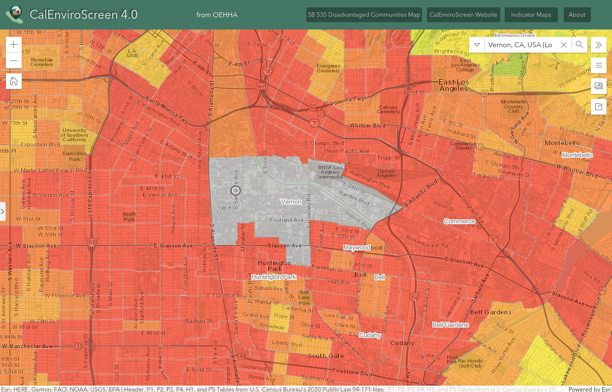

The Story of Waste, Schools, and Justice in California
The Story of Hazardous Waste, Schools, and Environmental Justice in California
Introduction of the problem
What are hazardous waste facilities?
The environmental justice (EJ) movement rose in the 1970s from the group of residents in Warren County, North Carolina who fought against the disposal of polychlorinated biphenyls (PCBs) in their community.1 This was one of the first prominent examples highlighting the disproportionate exposure to hazardous waste low-income communities of color face throughout the country. This fight also led to the seminal report by the United Church of Christ's Commission for Racial Justice titled Toxic Wastes and Race in the United States.2 This report, and other subsequent studies, have found that low-income communities and communities of color are more likely to live close to high-polluting industries, hazardous waste facilities, and incinerators.3
Hazardous waste facilities are regulated sites that are allowed to produce, treat, store, and dispose hazardous waste.4 In addition to the over 100 permitted sites throughout California, there are also hundreds of sites throughout the State that are undergoing cleanup, investigation, or enforcement for known or suspected contamination issues.5 These sites expose communities to a variety of chemicals that can increase the likelihood of cancer, respiratory diseases, neurological, reproductive, and developmental problems.6
The map below shows the precent of Black, Indigenous, people of color (BIPOC) compared to the percent of White people by census tract with the hazardous waste sites as identified by EnviroStor in the State.
What is environmental racism?
The term environmental racism has been used to describe how Black, Indigenous, and communities of color (BIPOC) are disproportionately exposed to toxic and hazardous waste based on race. Environmental racism calls out the barriers, laws, regulations, and policies our government uses to allow the placement of and the unequal protection the government provides to BIPOC communities from the dangers of hazardous waste facilities.
Southeast Los Angeles (SELA) provides an example of environmental racism in California. SELA communities abut the City of Vernon which hosts several hazardous waste facilities and several brownfields with known or potential contamination. These sites did not appear randomly but are rather a result of the intentional land use planning and laws which have allowed for multiple sources of hazardous waste to co-exist in or near BIPOC communities.
To the left is a map of the percentage of BIPOC people and density of hazardous waste sites located around the City of Vernon. The picture to the right is a snapshot of the same region showing its CalEnviroScreen 4.0 scores. CalEnviroScreen scores are calculated comparatively based on the pollution burden and population characteristics of census tracts throughout the State.
|  |
Method of analysis
Hazardous waste regulation continues to be an ongoing concern to environmental justice communities. Many environmental justice communities often see a gap in the regulation and enforcement of noncompliant hazardous waste facilities. Once a hazardous waste facility is closed, necessary cleanup is often delayed and/or to remediation methods or standards that are unacceptable to the surrounding community.
The following maps were created as part of the Climate Justice Design Fellowship at Harvard University. The data on the hazardous waste facilities and cleanup sites throughout the State was obtained through the Department of Toxic Substances Control's Envirostor database.7 School information was obtained through the State of California's Department of Education website.8 Racial and ethnic data was obtained through the 2020 U.S. Census data.9
There are several data limitations. First, EnviroStor is not updated regularly and not all information about a site or facility is complete. EnviroStor is not a fully inclusive list of all sites with known or potential contamination. For example, sites on the State's Cortese List and not all Toxic Release Inventory facilities are on EnviroStor.
Why schools?
School-age children spend a significant amount number of hours in schools. In 2021, nearly 50.7 million school-aged children spend at least six hours in schools across the country.10 Many of these schools are located in close proximity to or at time, built on top of, hazardous waste sites. As a result, the school locations are considered a key determinant of exposure to toxic pollutants.
Infants and children also have unique biological vulnerabilities and age-related patterns of exposure which make them more vulnerable to health impacts.11 For example, children consume more food, water, and breath more air per pound of body weight per day than an adult.12 Additionally, children are less able than adults to break down and excrete certain types of toxic compounds. Children also have more years of life than most adults and therefore have more time to develop chronic health conditions that could stem from early exposures.13
Environmental justice studies have found race and class inequities in the distribution of schoolchildren and schools near environmental hazards. In Los Angeles, minority students in LAUSD are more likely than their white counterparts to attend schools that are close to hazardous waste facilities.14 Latinos are more likely to attend schools near hazardous facilities and face higher health risks associated with toxic air emissions.15
US EPA created a Healthy School Environments Assessment Tool in 2006 to provide school districts guidance on the health and safety issues facing new and existing school sites. The guidance established guidelines to ensure children's environmental health concerns are considered in the siting, construction, and remediation of new schools.
A study based in Boston found that schools with disproportionately higher percentages of minority and economically disadvantaged schoolchildren are more likely to be located within a 1 mile radius Toxic Release Inventory (TRI) sites.16 The study also found a correlation between schools near TRI sites and low academic performance at the school level, as measured by English language art, math, and science Composite Performance Index scores.
The map below shows the hazardous waste sites within a ¼ mile radius of all public, charter, and private schools in the State .
Gap in hazardous waste law
There are certain environmental requirements public schools must consider when deciding where to site new public schools to ensure that new school sites will not endanger the health of students and school employees.17 At different points throughout the selection and before the purchase of a new school site, school districts are required to follow the California Environmental Quality Act process and obtain approvals on the adequacy of the site from the California Department of Toxic Substances Control and the California Department of Education.18 Existing law requires prohibits school districts from locating public schools on land that was previously a hazardous waste disposal site or solid waste disposal site unless the waste has been removed.19 If a school site is within 500 feet from a freeway or other busy traffic corridor, the school district must also show that the air quality at the propose site will not create the short-term nor long-term health impacts on students.20 A school district may still be able to site a school that does not meet either of these requirements if it can show that there are no other suitable sites and that there is a severe storage of sites.21
Existing law requires school districts to conduct a Phase I environmental assessment or may elect to proceed with prepare a Preliminary Environmental Assessment, sometimes referred to as a Preliminary Endangerment Assessment. A Phase I environmental assessment investigates whether the release of hazardous material has occurred on the site, if there is a threat of a release of hazardous materials, or if there is a naturally occurring hazardous material is present on the proposed schoolsite.22 A school district can elect to conduct a Preliminary Environmental Assessment of a proposed school site if there is already known contamination on the proposed site.23
In addition to the preparation of a Preliminary Environmental Assessment, school districts are also required to prepare an environmental impact report (EIR) or a negative declaration (ND) under the California Environmental Quality Act and make both documents available for a 30-day comment period.24 If the Preliminary Environmental Assessment identifies significant contamination, the school district can elect to drop the proposed school site or clean up the contamination under a DTSC Voluntary Cleanup Agreement or School Cleanup Agreement.
These requirements, which are meant to protect the health and well-being of students, do not apply to charter and private schools. Charter schools are not required to comply with these requirements unless they receive state school bond funds. Private school are only typically required to comply with health and safety provisions they are explicitly required to follow under the Education Code.25 In the 2020-2021 school year, students in charter schools made up 11.5 percent of the public school student population in California.26 In LAUSD, for example, 1 in every 5 public school students attend a charter school.27
This lack of regulation on charter and private schools means that a school is more likely to get built on contaminated site without proper assessment of the safety or health impacts this constant exposure could have on students, teachers, and school staff.
Cudahy case study
Just 11 miles southeast from downtown Los Angeles, residents in the City of Cudahy recently fought these gaps in regulation. Cudahy is in the 97^th^ percentile of communities most impacted by pollution in the State and is considered an environmental justice community. Of the five schools in Cudahy, two are built on or adjacent to hazardous waste sites.28
In 2020, KIPP SoCal Public Schools had plans to build a new elementary school on a former industrial site with decades of documented contamination.29 Cudahy Alliance for Justice and local residents sued the City of Cudahy for its approval of the KIPP school as a project that does not require an EIR under the California Environmental Quality Act. Because the project was categorized as a ministerial project, rather than discretionary project, KIPP was not legally obligated to conduct an EIR or make any effort to remediate the potential school site. Additional oversight by DTSC would have likely ensured that KIPP would have conducted the crucial studies and remediation necessary.
In 2022, a superior court judge ruled in favor of Cudahy Alliance for Justice and local residents and required that the City complete an EIR for the project and properly clean up the site with DTSC oversight.30 In fall of 2022, KIPP decided to abandon plans to build the school in Cudahy.
Solutions
There have been two bills in previous legislative sessions that have tried to fix this gap in regulation: Assembly Bill 762 (Lee, 2021) and AB 2214 (Garcia, 2022).31 Both of these bills died in the suspense file in the Senate Appropriations Committee, in part due to the strong opposition from charter school lobbying.32
Although Cudahy Alliance for Justice successfully prevented the construction of a charter school, communities should not be forced to find an attorney and litigate a case every time a charter or private school is proposed on a former hazardous waste site. It is more likely that more of these situations will happen in environmental justice communities, where low-income working-class people are unable to stay abreast of new school projects in their neighborhood and unable to obtain an attorney to challenge projects. Legislative change is possible, and needed, in order to protect communities across the State.
-
United Church of Christ, A Movement Is Born: Environmental Justice and the UCC (last accessed December 2, 2022). ↩
-
United Church of Christ: Commission for Racial Justice, Toxic Waste and Race in the United States (1987) https://new.uccfiles.com/pdf/ToxicWastes&Race.pdf. ↩
-
See generally Maantay J., Chakraborty J., and Brender J., 2010, Proximity to Environmental Hazards: Environmental Justice and Adverse Health Outcomes, Environmental Protection Agency, Washington, DC; Brender J., Maantay J., Chakraborty J., 2011, \"Residential proximity to environmental hazards and adverse health outcomes\", American Journal of Public Health, Vol.101, 37-52; Johnson R., Ramsey-White K., Fuller C.H., 2016, \"Socio-demographic differences in Toxic Release Inventory siting and emissions in Metro Atlanta\", International Journal of Environmental Research and Public Health, Vol.13, No.8, 747-759. ↩
-
California Department of Toxic Substances Control, EnviroStor: Report of Permitted Hazardous Waste Facilities in California (last accessed on Dec. 2, 2022). ↩
-
Meng Y., "Schools near Toxics Release Inventory Sites: An Environmental Justice Study for Schoolchildren in Boston, MA", European Journal of Geography, [En ligne], Environnement, Nature, Paysage, document 941, mis en ligne le 29 avril 2020, consulté le 03 décembre 2022, http://journals.openedition.org/cybergeo/34682. ↩
-
Choi H. S., Shim Y. K., Kaye W. E., Ryan P. B., 2006, \"Potential residential exposure to toxics release inventory chemicals during pregnancy and childhood brain cancer\", Environmental Health Perspectives, Vol.114, No.7, 1113-1118. ↩
-
National Center for Education Statistics, 2018, Fast Facts (last accessed Dec. 2, 2022). ↩
-
Landrigan P.J., Rauh V.A., Galvez M.P., 2010, "Environmental justice and the health of children", Mt Sinai J Med. Mar-Apr;77(2):178-87. ↩
-
Id. ↩
-
Id. ↩
-
Pastor, M., Sadd, J. L., & Morello-Frosch, R. (2002). Who's Minding the Kids? Pollution, Public Schools, and Environmental Justice in Los Angeles. Social Science Quarterly, 83(1), 263--280. http://www.jstor.org/stable/42956285. ↩
-
Id. ↩
-
Meng Y., "Schools near Toxics Release Inventory Sites: An Environmental Justice Study for Schoolchildren in Boston, MA." ↩
-
Education Code section 17212 et seq. ↩
-
California Senate Committee on Education, AB 2214 Bill Analysis (last accessed Dec. 2, 2022). ↩
-
Education Code section 17213(a)(1). ↩
-
Education Code section 17213(c)(2)(C). ↩
-
Education Code section 17213(c)(2)(D). ↩
-
Education Code section 17213.1(a). ↩
-
Education Code section 17213.1(a)(4)(B). ↩
-
Education Code section 17213.1(a)(4)(B). ↩
-
California Senate Committee on Education, AB 2214 Bill Analysis (last accessed Dec. 2, 2022). ↩
-
California Department of Education, Charter Schools- CalEdFacts (last accessed Dec. 2, 2022). ↩
-
EdSource, A new chapter for charter schools in California as enrollment drops for the first time in 3 decades (last accessed Dec. 2, 2022). ↩
-
Cudahy Alliance for Justice, Press Release: Judge Rules That Approval of Elementary and Middle School on Hazardous Waste Site in Southeast L.A. was Unlawful (Jan. 20, 2022). ↩
-
Larry Buhl, City Sued for Letting Charter School Dodge Environmental Rules, CAPITAL & MAIN (Feb. 2, 2021). ↩
-
Cudahy Alliance for Justice, Press Release: Judge Rules That Approval of Elementary and Middle School on Hazardous Waste Site in Southeast L.A. was Unlawful (Jan. 20, 2022). ↩
-
California Legislative Information, AB 762- Hazardous emissions and substances: schoolsites: private and charter schools (last accessed Dec. 2, 2022); California Legislative Information, AB 2214- California Environmental Quality Act: schoolsites: acquisition of property: schools districts, charter schools, and private schools (last accessed Dec. 2, 2022). ↩
-
California Senate Committee on Appropriations, AB 2214 Bill Analysis (last accessed Dec. 2, 2022). ↩